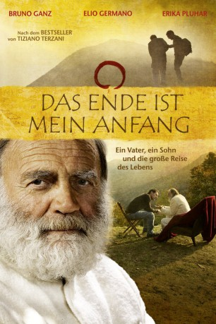

#6607 Das Ende ist mein Anfang
 
 IMDB-Wertung: 6.4 / 10
IMDB-Wertung: 6.4 / 10  Metascore: 0
Metascore: 0 
Journalist und Buchautor Tiziano Terzani ruft seinen Sohn aus New York zu sich, um ihm von seiner Kindheit und Jugend zu erzählen, von seiner Tätigkeit als Asienkorrespondent und der Reise zu sich selbst aufgrund einer Krebserkrankung, die ihn in die Einsamkeit des Himalaya und einen Kosmos spiritueller Erfahrungen führte. In langen und sehr emotionalen Vater-Sohn-Gesprächen festigt sich die Bindung, werden alte Spannungen aufgelöst, Tabuthemen wie die Auseinandersetzung mit dem Tod angegangen.
Jahr: 2010
Dauer: 97 Minuten
FSK: 0
Land: Deutschland Studio: UFATonspuren:
Untertitel:
Auflösung: 1080p (1920x816) Größe: 6830 MB
Genre: Drama, Biographie
Regisseur: Jo Baier
Drehbuch: Folco Terzani
Soundtrack:
Darsteller:
 Bruno Ganz als Tiziano Terzani
Bruno Ganz als Tiziano Terzani- Elio Germano als Folco Terzani
 Andrea Osvárt als Saskia Terzani
Andrea Osvárt als Saskia Terzani- Erika Pluhar als Angela Terzani
Datei: X:\2010(A-F)\Ende ist mein Anfang, Das (2010, FSK0, 1920x816).mkv seit 25.07.2017
Festplatte: HD 2009(G-Z)-2010(A-F)
 Es gibt insgesamt 95 Filme in der Gruppe '2010(A-F)'
Es gibt insgesamt 95 Filme in der Gruppe '2010(A-F)'